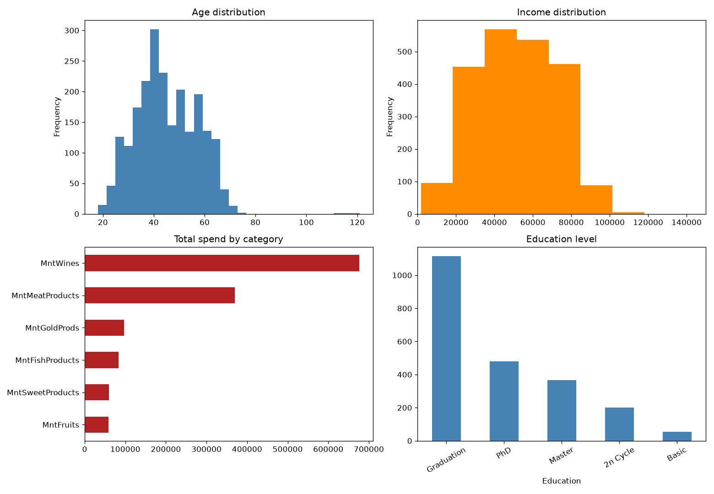
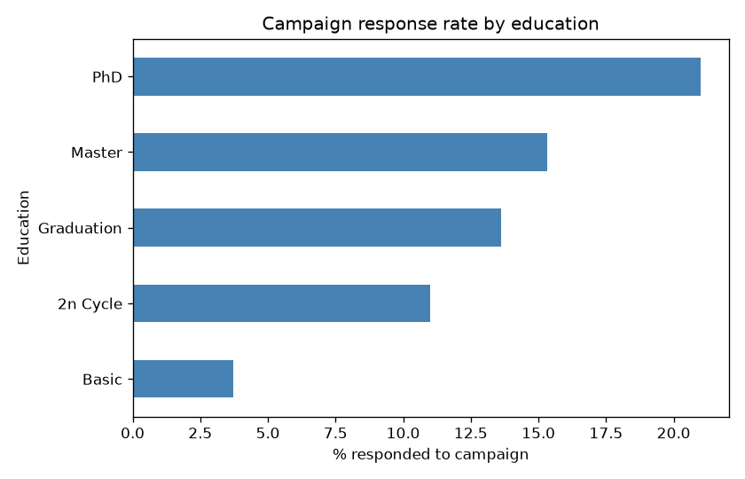
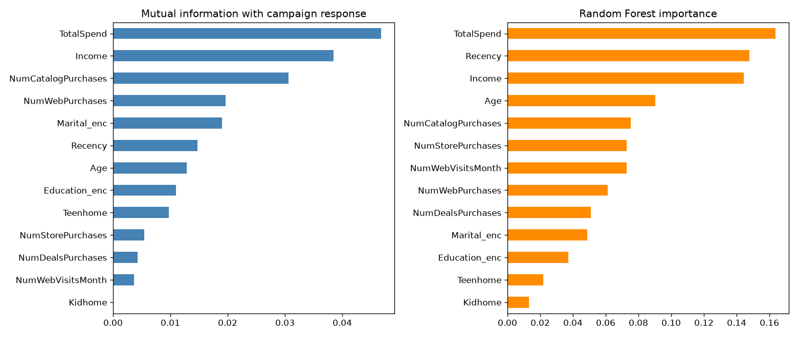
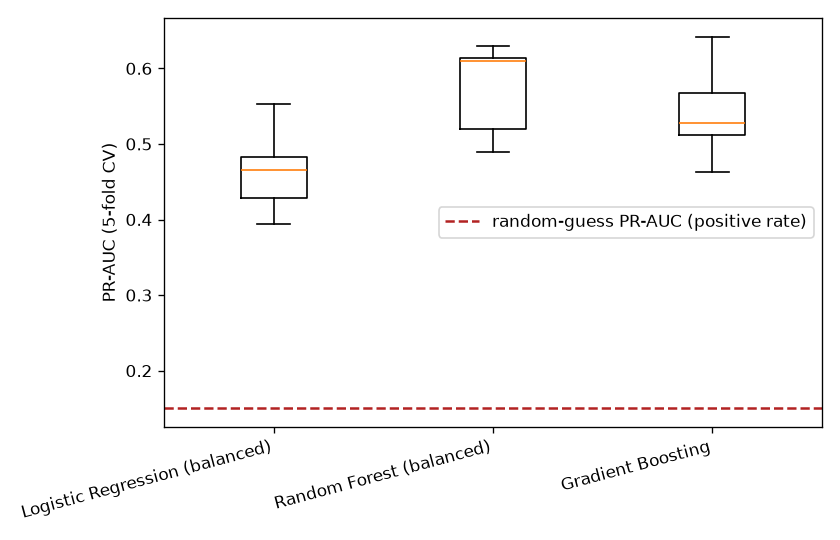
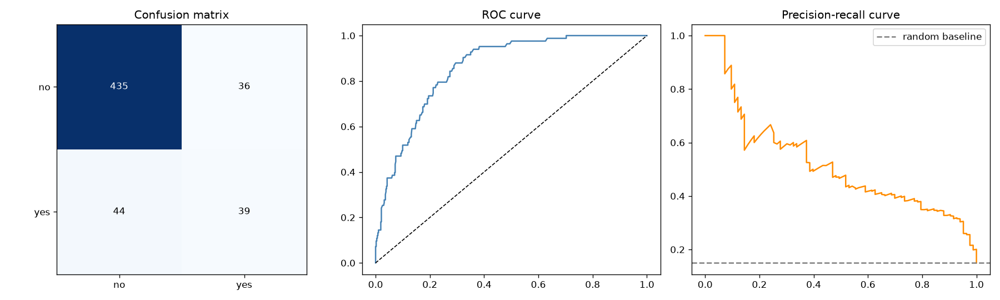
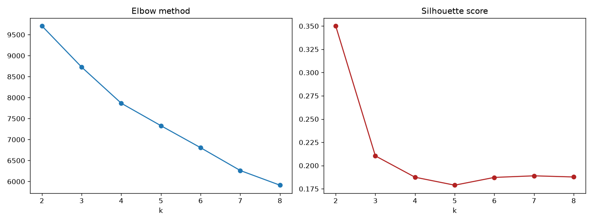
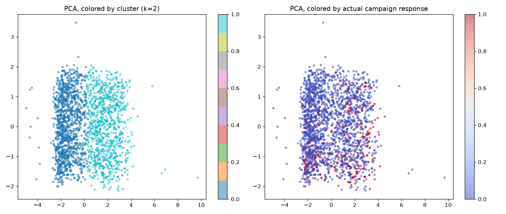

Data Science Project · Customer Personality Analysis Dataset
Email Campaign Analysis
2,240 customers, predicting response to a marketing campaign and segmenting customers by spending and engagement pattern, using a real classification model plus unsupervised clustering.
Source notebooks: github.com/Nik8x/Email-Campaign-Newsletter-Analysis
The dataset at a glance


Statistical testing
| Test | Result | p-value |
|---|---|---|
| Pearson correlation, income vs total spend | r = 0.668 | < 1×10-285 |
| ANOVA, response rate across education levels | F = 5.84 | 1.1×10-4 |
| Chi-square, has kids at home × response | χ² = 11.13 | 8.5×10-4 |
Income and spending are strongly linked. Education shows a real, if modest, association with response - PhD holders respond at 21.0% vs 3.7% for customers with only a Basic education. Having kids at home is associated with a significantly lower response rate (12.0% vs 17.2%), consistent with these campaigns skewing toward discretionary spending.
Predicting campaign response

TotalSpend
and Income rank high by both, but Recency
(Random Forest's #2 feature) and NumCatalogPurchases
(mutual information's #3) trade places between the two, since the
methods measure genuinely different things. Education
ranks well down the list in both, despite being statistically
significant above, a reminder that "significant" and "strongly
predictive" aren't the same claim.

| Model | CV PR-AUC |
|---|---|
| Random-guess baseline (positive rate) | 0.150 |
| Logistic Regression (balanced) | 0.465 |
| Gradient Boosting | 0.542 |
| Random Forest (balanced) | 0.573 |

Test PR-AUC 0.521, ROC-AUC 0.858 against a 15.0% baseline positive rate, real performance on a hard, imbalanced target.
Unsupervised: customer segmentation


Notebooks
Key findings
- Income and spending are strongly linked (r = 0.668, p ≈ 0), the highest-income customers spend meaningfully more across every product category.
- Education has a real, if modest, association with response (p = 0.0001): PhD holders respond at 21.0% vs 3.7% for Basic education. Kids at home is associated with a significantly lower response rate.
- A class-weighted classifier reaches real performance on a hard, imbalanced target: test PR-AUC 0.521 (ROC-AUC 0.858) against a 15.0% baseline.
- Mutual information and Random Forest importance don't fully agree on which features matter most, since the two methods measure genuinely different things.
- Customer segments found with zero response information line up with a real response-rate gradient: 21.0% vs 10.5% between the highest- and lowest-engagement segments.
Future work
- Model each of the 5 individual campaigns (AcceptedCmp1-5) separately, to see whether responsiveness drifts over time.
- A proper RFM (recency/frequency/monetary) feature set, formalizing what the current features only approximate.
- Investigate the rare
Complainflag (0.9%) as a separate target, likely needing dedicated rare-event handling.